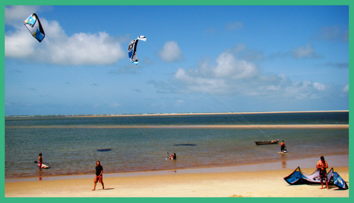

Atins Kite École
L’école de kite est constituée d’une petite communauté d’entraîneurs et entraîneuses obsédés du kitesurf. Notre équipe de moniteurs qualifiés et enthousiastes vont vous apprendre tout le nécessaire pour vous permettre de réussir à naviguer de la manière la plus sûre et rapide.
Pour ses vents toujours constants, ses grosses lagunes d’eau plate, chaude et peu profonde et ses plages légèrement peuplées, Atins est le meilleur choix pour les débutants qui s’intéressent à apprendre ce sport. L’école de kite se trouve idéalement placée dans la rue principale d’Atins, avec un accès direct sur la plage sous un bois de palmiers.
L’école offre différents services: des cours individuels et en groupe, en espagnol, anglais et portugais; la location d’équipements et des installations pour les garder; des services de kite-caddy ; des larges aires aérées pour se détendre et se reposer parmi les tours ; et des endroits pour laver et sécher l’équipement.
On vous recommande de nous prévenir à l’avance si vous avez besoin de nous louer des équipements.
Downwind et Kite Tours
Il y a plusieurs possibilités pour faire du downwind et pour les tours guidés, selon le niveau de navigation et les préférences personnelles. Vous avez toujours le choix du transport terrestre pour le retour et l’appui d’une vedette de sauvetage; ainsi vos compagnons de voyage qui ne naviguent pas peuvent partager l’aventure en voyageant avec vous.
Pour les débutants et les débutants confirmés, les downwinds ont lieu tout le long de la lagune d’eau plate, tandis que les navigants les plus expérimentés peuvent s’aventurer à travers la mer ouverte où l’on peut trouver des vagues de 1,5 à 2 mètres selon la marée. Il existe d’autres options telles que les downwinds à travers les eaux calmes du Fleuve Preguiças et les séances de kite dans quelques lagunes des Lençóis Maranhenses.